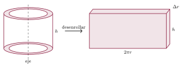
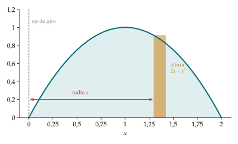

Para arrancarUn rollo de papel higiénico: capas cilíndricas una dentro de otra. Los cascarones calculan volúmenes de revolución cuando las arandelas se complican.
Algunos volúmenes son difíciles con discos. Si la región bajo y=2x2−x3, 0≤x≤2, gira alrededor del eje y, los discos horizontales tendrían radios que exigen despejar x de una cúbica. El método de los cascarones evita ese problema: en lugar de cortar el sólido perpendicularmente al eje, lo descompone en tubos concéntricos paralelos al eje.
14.1 El método
Un cascarón cilíndrico de radio interior r1, radio exterior r2 y altura h tiene volumen πr22h−πr12h=2π2r1+r2h(r2−r1)=2πrhΔr, donde r es el radio medio y Δr el grosor. Si «desenrollamos» el cascarón obtenemos casi una lámina rectangular de largo 2πr (la circunferencia), alto h y grosor Δr.

Un cascarón desenrollado es casi una lámina: volumen ≈2πr⋅h⋅Δr.
Si la región bajo la gráfica de f≥0, 0≤a≤x≤b, gira alrededor del eje y, el volumen del sólido es V=∫ab2πxf(x)dx=∫ab2π(radio)(altura)dx.
🎬 Míralo en 3D · muévelo túCascarones en el torno
Ahora el perfil gira alrededor del eje y: el sólido se arma con tubos (cascarones) uno dentro de otro.
Para recordar la fórmula se piensa en el elemento representativo: un rectángulo vertical en x, de altura f(x) y ancho dx, que al girar barre un cascarón de radio x.
La región bajo y=x, 0≤x≤4, gira alrededor del eje y. Con cascarones, V=∫042πxxdx=2π⋅52x5/204=5128π. Con arandelas horizontales (R=4, r=y2): ∫02π(16−y4)dy=π(32−532)=5128π. ¡Coinciden!
Que los dos métodos den el mismo volumen se puede demostrar en general integrando por partes: si f es creciente e invertible en [0,b], ∫πx2dy (arandelas) se transforma en ∫2πxf(x)dx (cascarones). Desde el punto de vista del Cálculo de varias variables, ambos son la misma integral triple calculada en distinto orden.
3D · gírelaCascarones cilíndricos que se desenrollan
Escoge un cascarón y desenróllalo: es casi una lámina de 2πr × h × Δr.
14.2 Cuál método usar
rectángulo representativo ⊥ eje
rectángulo ∥ eje
método
discos / arandelas
cascarones
volumen del elemento
π(R2−r2)d(⋅)
2π(radio)(altura)d(⋅)
eje vertical, se integra en
y
x
eje horizontal, se integra en
x
y
Se escoge el método que evita despejar variables o partir la región.
La región entre y=x−x2 y el eje x gira alrededor de la recta x=2. Con cascarones, el radio es la distancia al eje, 2−x, y la altura x−x2: V=∫012π(2−x)(x−x2)dx=2π∫01(x3−3x2+2x)dx=2π(41−1+1)=2π.
Con el eje del agujero vertical, el anillo es el sólido que barre la región a≤x≤R, ∣y∣≤R2−x2: V=∫aR2πx⋅2R2−x2dx=−34π(R2−x2)3/2aR=34π(R2−a2)3/2=34π(2h)3=6πh3.
🔎 Profundiza: cascarones en acción
Giremos alrededor del eje y la región bajo y=2x−x2, 0≤x≤2. Con discos habría que despejar x en función de y (dos ramas); con cascarones es directo: el cascarón en x tiene radio x, altura 2x−x2 y grosor dx.

y se obtiene un cascarón cilíndrico de volumen 2πx(2x−x2)dx." style="width:560px;max-width:100%" loading="lazy">Al girar la franja naranja alrededor del eje y se obtiene un cascarón cilíndrico de volumen 2πx(2x−x2)dx.